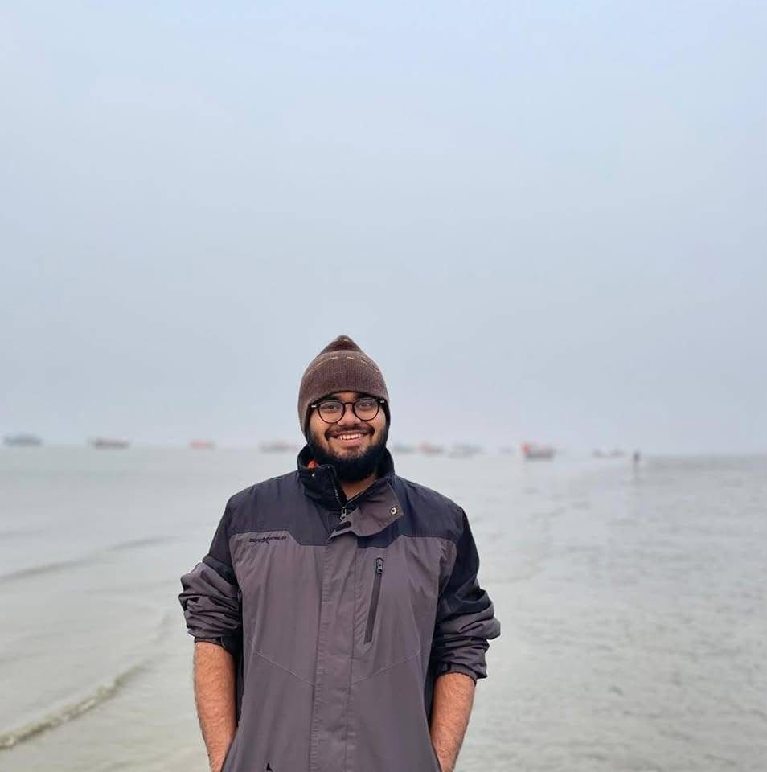

3rd Year Undergraduate, UIU · Dhaka, Bangladesh
Hi! My name is Nurul Labib Sayeedi. I am a 3rd year undergraduate student pursuing a Bachelor of Science in Data Science at United International University (UIU), Bangladesh.
My research focuses on Natural Language Processing, with particular interest in low-resource language evaluation, multilingual benchmarking, and multimodal machine learning. My work has been published at EMNLP (Findings 2026), *SEM 2026 (co-located with ACL), EACL 2027 (Findings), and the ACL 2026 Workshop on Multilinguality in the Era of LLMs (MeLLM).
I am currently serving as an Undergraduate Teaching Assistant (UTA) at UIU, assisting with courses in Database Management Systems and Data Structures & Algorithms.
- Research focus Natural Language Processing · Multilingualism · Multimodal Learning
- Education B.Sc. in Data Science, United International University
- Published at EMNLP*SEMEACLACL Workshop
- Currently Undergraduate Teaching Assistant, UIU
- 7Research papers
- 4Peer-reviewed
- 3Preprints
- 3Semesters as UTA
News scroll for the full timeline ↓
- 📄 Nov 2026Paper accepted to the Findings of EACL 2027: To What Extent Do Large Language Models Understand Bangla Idioms?
- 📄 Aug 2026Paper accepted to the Findings of EMNLP 2026: Many Dialects, Many Languages, One Cultural Lens: Evaluating Multilingual VLMs for Bengali Culture Understanding Across Historically Linked Languages and Regional Dialects
- 📄 May 2026Paper accepted at *SEM 2026, co-located with ACL 2026: Can LLMs Solve My Grandma’s Riddle? Evaluating Multilingual Large Language Models on Reasoning Traditional Bangla Tricky Riddles
- 📄 May 2026Paper accepted at the ACL 2026 Workshop on Multilinguality in the Era of LLMs (MeLLM): MULTIHALUDET: Multilingual Hallucination Detection via LLM Hidden State Probing
- 📝 2026Preprint posted: Did the Problem Actually Get Harder? Testing LLMs on Paired P and NP-Complete Problems Hardened by Adversarial Multi-Agent Rewriting
- 📝 2026Preprint posted: Mind the Scale: Fair Comparison Reveals When Hyperbolic Geometry Helps Linguistic Hierarchies
- 🔬 Summer 2025Started as Undergraduate Teaching Assistant (UTA) at United International University, assisting with DBMS and DSA courses.
Research Interests
-
Natural Language Processing
Evaluation and benchmarking of large language models, low-resource NLP, reasoning, hallucination detection, and figurative language understanding in culturally grounded settings.
-
Multilingualism
Low-resource and dialectal languages, cross-lingual transfer, culturally grounded evaluation, and performance gaps LLMs carry across language families and dialects.
-
Multimodal Learning
Vision–language models, culturally grounded multimodal benchmarks, and evaluation of VLMs across historically linked languages and regional dialects.
Experience publications →
- Undergraduate Teaching Assistant (UTA) United International University — Database Management Systems, Data Structures & Algorithms I Summer 2025 – Present
Contact
Happy to talk about research, collaborations, or anything in my work. Email is the fastest way to reach me.
Contact details
- Email nsayeedi2410045@bsds.uiu.ac.bd
- Secondary email nlabibs2003@gmail.com
- Location Mohammadpur, Shyamoli, Dhaka, Bangladesh